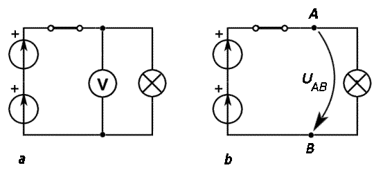
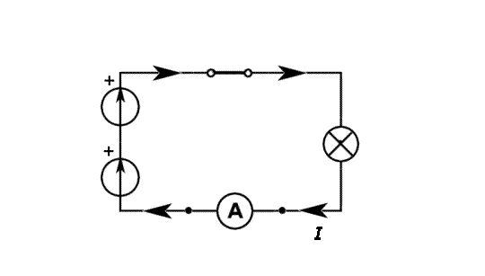

Provocarea 4-1
Provocarea 4-1
Investighează alcătuirea şi funcţionarea unei lanterne!
Producerea şi utilizarea curentului continuu |
Curentul electric |
A-4. |
Circuite electrice |
O mulţime de aparate care ne fac viaţa mai uşoară şi mai interesantă utilizează energia eliberată prin recombinarea sarcinilor electrice: computerul, telefonul mobil, televizorul, frigiderul, lanterna - pentru a numi doar câteva.
Provocarea 4-1
Investighează alcătuirea şi funcţionarea unei lanterne!
În figura 4−1 este reprezentată alcătuirea tipică a unei lanterne.
Provocarea 4-2
Oare de ce a ales proiectantul lanternei această combinaţie de materiale şi componente?
Părţile metalice ale lanternei permit trecerea purtătorilor de sarcină electrică atunci când lanterna funcţionează, în timp ce părţile din mase plastice împiedică trecerea purtătorilor de sarcină. Resortul ţine apăsate celulele, astfel ca părţile metalice ale acestora să se atingă şi să permită trecerea purtătorilor de sarcină. Contactele întrerupătorului permit stabilirea sau întreruperea, după dorinţă, a unui contact electric, fără să se deterioreze prin utilizare repetată.
Oglinda concentrează lumina becului într−un fascicul îngust, ca să vezi bine zona spre care îndrepţi lanterna. Carcasa ţine toate acestea laolaltă, iar forma şi aspectul său sunt importante pentru ca lanterna să suporte eventuale şocuri, să arate bine şi să o poţi folosi cu uşurinţă.
Lanterna este un produs mărunt, dar pentru proiectarea şi realizarea unei lanterne care să funcţioneze bine, este necesară o bună înţelegere a interacţiunii sarcinilor electrice şi un bun control al separării şi recombinării acestora.
Un alt mod în care poţi descrie o lanternă este schema circuitului electric, în care componentele lanternei sunt reprezentate simplificat, prin simboluri (figura 4−2).
Liniile din desen reprezintă conductoarele metalice care conectează între ele componentele circuitului.
În unele scheme vei întâlni celulele reprezentate ca în figura 4−3a, bateriile ca în figura 4−3b, iar becurile ca în figura 4−3c.
 Numim circuit electric un traseu închis de−a lungul căruia pot
trece purtătorii de sarcină electrică.
Numim circuit electric un traseu închis de−a lungul căruia pot
trece purtătorii de sarcină electrică.
Într−o lanternă, închizând întrerupătorul, traseul este complet şi permite purtătorilor de sarcină să circule (figura 4−4).
În corpurile metalice (cum sunt firele de cupru), electronii sunt purtătorii de sarcină care se pot deplasa (ionii pozitivi sunt ficşi). Electronii aflaţi în exces pe borna negativă a bateriei trec prin circuit şi se recombină cu sarcinile pozitive în exces pe borna pozitivă a bateriei. În circuitul din figura 4−4, electronii circulă în sens invers acelor ceasului.
Aceleaşi efecte s−ar obţine dacă circuitul ar fi parcurs în sensul acelor ceasului de către purtători de sarcină pozitivă (sensul convenţional al curentului).
 Activitatea experimentală 4-1
Activitatea experimentală 4-1
Realizează un circuit electric folosind bateria şi becul unei lanterne. Lucrează în echipă.
Pasul 1. Demontati bateria şi becul unei lanterne. Identificaţi parametrii normali (nominali) de funcţionare a becului (tensiunea şi intensitatea curentului electric), înscrise pe acesta.
Pasul 2. Realizaţi circuitul electric, utilizând conductoare de legătură şi un suport pentru bec, astfel încât becul să lumineze, semanlând trecerea purtătorilor de sarcină prin circuit.
Pasul 3. Selectaţi la un multimetru funcţia de măsurare a tensiunii şi măsuraţi cu multimetrul tensiunile electrice între diferite puncte ale circuitului, ca în figura 4−5a. Marcaţi pe schema circuitului aceste tensiuni ca arce orientate (figura 4−5b).

Figura 4-5. Măsurarea tensiunii între două puncte ale unui circuit: a) conectarea unui
voltmetru între două puncte ale circuitului; b) marcarea tensiunii pe schema electrică a circuitului.
Pasul 4. Selectaţi la multimetru funcţia de măsurare a intensităţii curentului electric. Intercalaţi multimetrul astfel setat în diferite locuri ale circuitului, astfel ca purtătorii de sarcină să−l străbată şi măsuraţi intensitatea curentului electric (figura 4−6).

Figura 4-6. Măsurarea intensităţii curentului electric printr−o secţiune a circuitului.
Marcaţi pe schema circuitului aceste intensităţi ca săgeţi.
Pasul 5. Comparaţi parametrii electrici măsuraţi cu cei nominali de funcţionare ai becului.